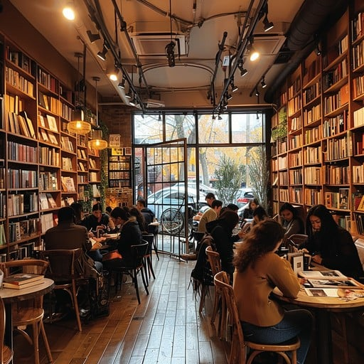

At Between the Lines' Cozy Cafe, we invite you to unwind in a warm, inviting ambiance that’s perfect for curling up with a good book or catching up with friends. The cafe’s soft lighting, rustic wood accents, and comfortable seating create a relaxed space where you can escape the bustle of the outside world. Our menu features a variety of artisanal coffees, loose-leaf teas, and fresh, locally sourced pastries, alongside light bites like sandwiches and seasonal treats. Whether you’re here to savor a cappuccino, immerse yourself in a novel, or simply enjoy the quiet charm, the Cozy Cafe offers the perfect setting to pause, relax, and enjoy the moment.
- Artisanal Coffee
- Loose-Leaf Teas
- Freshly Baked Pastries
- Gourmet Sandwiches
- Seasonal Treats
Today's specials
Our signature Lavender Honey Latte is a soothing blend that combines rich espresso with steamed milk, infused with a hint of lavender and a drizzle of local honey. This unique latte offers a delicate floral aroma balanced with just the right amount of sweetness, making it the perfect choice for those looking to unwind and indulge. Each sip provides a creamy, velvety texture and a calming flavor that pairs wonderfully with a cozy afternoon of reading or catching up with friends. Whether you’re a coffee enthusiast or looking to try something new, this latte is sure to become a favorite.
Online Menu